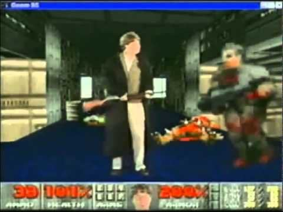
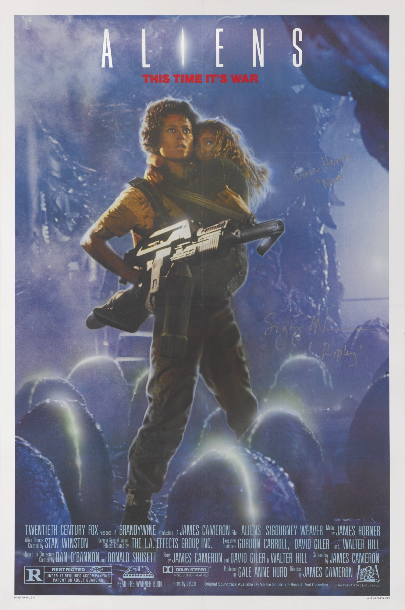
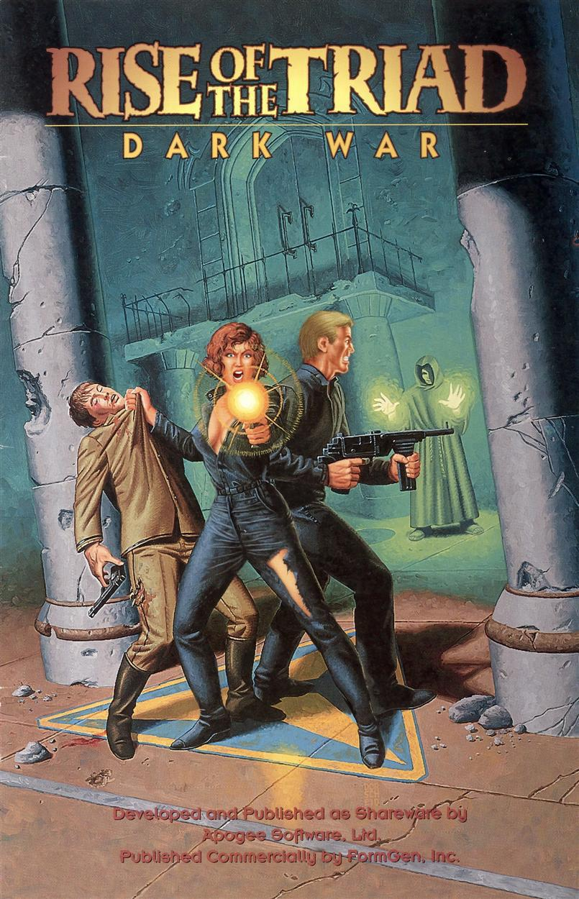
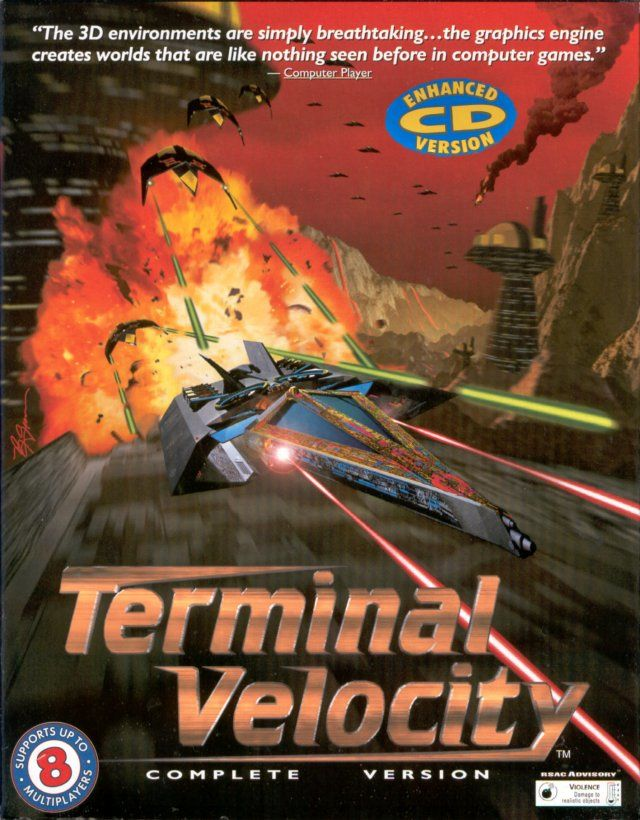
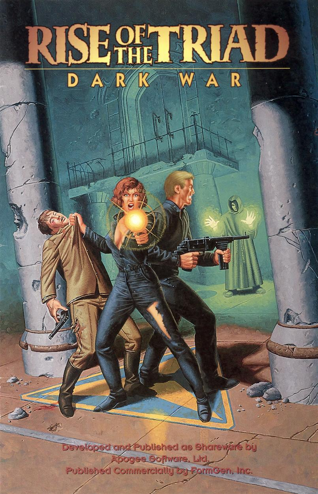
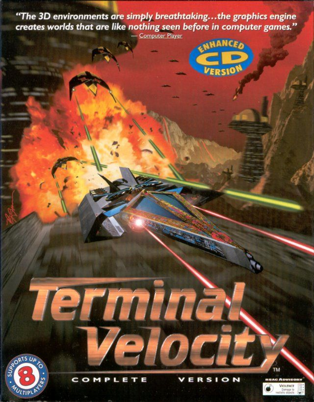
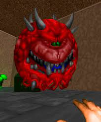
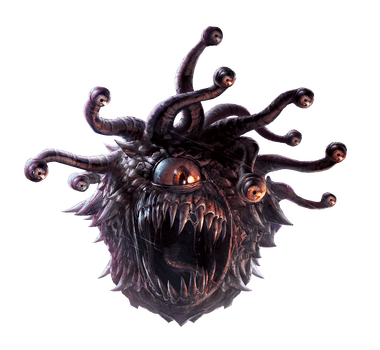
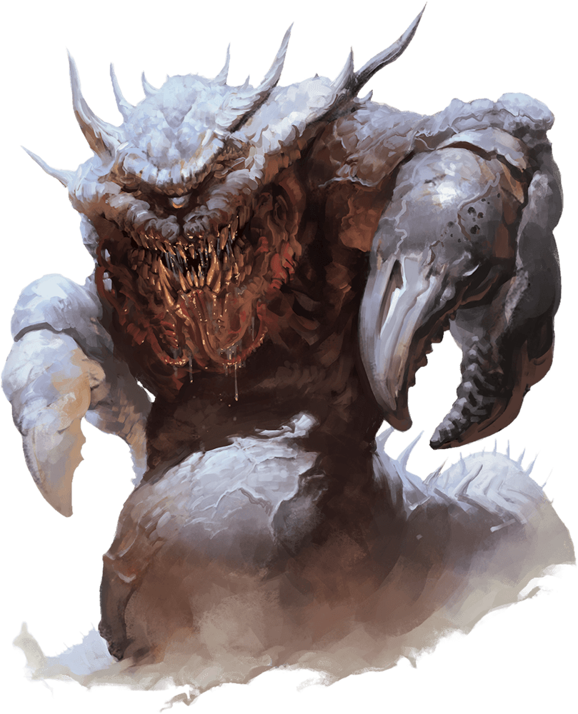

Sapevi che secondo le stime DOOM è il software più installato del 1995? A quanto pare il gioco era installato su più pc di Windows 95. La popolarità del gioco spinse il fondatore di Microsft Bill Gates a considerare l'idea di acquistare il software, poi però decisero di creare un port del gioco per Windows in modo da promuovere il sitema operativo come una piattaforma di gioco. Il 13 ottobre 1995 la Microsoft presento un video promozionale di Windows 95 con Bill Gates sovrapposto al gioco.
Inizialmente Id Software voleva creare un gioco basato sul film "Alien", la software house cominciò anche a contrattare con la Twenty Century Fox per le licenze, ma l'idea fu abbandonata per lasciare più spazio alla creatività degli sviluppatori. Il concept finale di DOOM trae ispirazione da Alien ma anche da altri famosi prodotti Holliwoodiani; la motosega e il fucile a pompa sono citazioni alla saga di "Evil Dead" da noi conosciuta come "La Casa". Il nome DOOM viene da una battuta del film "Il Colore Dei Soldi" dove Tom Cruise si presenta ad una partita di biliardo con una stecca personalizzata in una custodia, quando gli viene chiesto cosa ci sia dentro lui risponde -"Doom".

L'idea di usare i demoni come nemici venne ad alcuni sviluppatori dopo aver giocato una campagna di Dundeons and Dragons dove alla fine si apre un portale che permise un'invasione demoniaca
Il direttore creativo Tom Hall aveva originariamente creato una trama molto elaborata per il gioco, e scrisse un documento chiamato DOOM Bible contenente il design del gioco. La trama originale avrebbe dovuto aver luogo su un pianeta alieno chiamato Tei Tenga che sarebbe stato invaso da creature provenienti dall'inferno, ci sarebbero inoltre dovuti essere 5 personaggi giocabili caratterizzati da abilità peculiari. La storia comprendeva originariamente l'andare e tornare dall'inferno con la possibile distruzione del pianeta, infine il protagonista sarebbe stato ritenuto responsabile dell'accaduto su Tei Tenga e mandato in prigione. John Carmack (co-fondatore diId Software) non approvo una storia così dettagliata e la DOOM Bible venne per lo più ignorata nella versione finale. Carmack spiegò la sua posizione riguardo la narrazzione nei videogiochi nel 2003 dicendo: "la storia nei videogiochi e come la storia dei film porno. Ci si aspetta che ci sia, ma non è così importante". Alcuni elementi del documento vennero mantenutinella versione finale del gioco, come il laboratorio militare sul pianeta alieno, l'andare e tornare dall'inferno e le versioni modificate di alcune armi e alcuni mostri presentati in origine nella DOOM Bible. Alla fine Tom Hall portò con sè alcuni elementi della DOOM Bible dop aver lasciato Id Software per lavorare con la software house "3D Realms". Lo sparatutto in prima persona "Rise of the Triad" presenta i personaggi originariamente descritti nella DOOM Bible e nel simulatore di volo "Terminal Velocity" si può trovare un pianeta chiamato Tei Tenga
 



Il cacodemon di DOOM è ispirato al classico mostro di Dungeons and Dragons "Beholder", il suo design trae ispirazione da un altro mostro di D&D, il terrore astrale
  